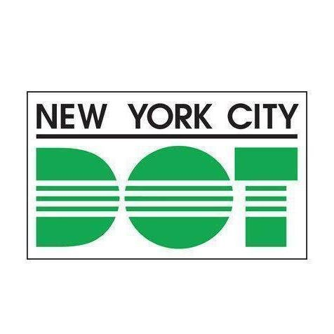
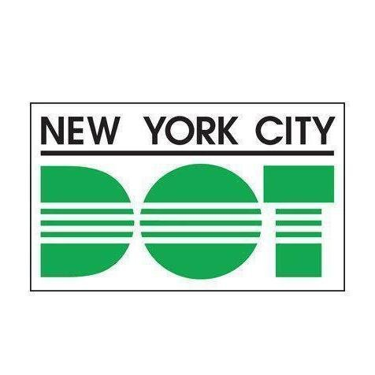

Welcome,
Thank you for visiting my webpage.
Please select from the navigation links above to expand this legend.
From there you can begin your geospatial journey to learn more about me.
Click "Home" to reset the mapview and return this message
If you're short on time feel free to jump straight to my resume or see how to contact me below.
Home
 DEPARTMENT OF TRANSPORTATION
NEW YORK RESTORATION PROJECT
 ATLAS ENVIRONMENTAL LABORATORY
ATLAS ENVIRONMENTAL LABORATORY
 TELEPATHY
TELEPATHY
JULIA ROSA FLORAL EVENT DESIGN
PROFESSIONAL
 DEPARTMENT OF TRANSPORTATION
[College Aide]
NEW YORK RESTORATION PROJECT
[Environmental Steward]
[Environmental Lab Analyst]
[Typist/Programming Intern]
JULIA ROSA FLORAL EVENT DESIGN
[Sustainability Intern]
Home
 HUNTER COLLEGE
HUNTER COLLEGE
PENN STATE UNIVERSITY
CITY COLLEGE OF NY
 H.S. MATH,SCI,ENGINEERING
H.S. MATH,SCI,ENGINEERING
ACADEMICS
[M.S. Geoinformatics]
PENN STATE UNIVERSITY
[M.P.S Sustainability, Management, & Policy]
CITY COLLEGE OF NY
[B.S. Geology]
[H.S. Degree]